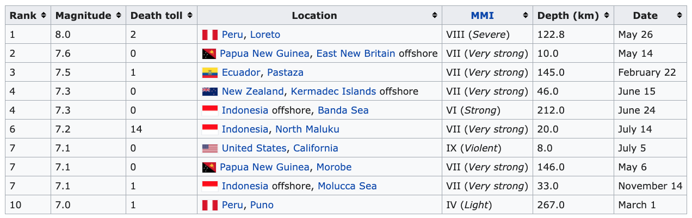

23 Dates and Times
Many data sets have a “date” or “time” attribute. If you’re going to look at how something is changing over time, you had better have time as part of your data.
Time values often appear as dates or times as opposed to numbers. And that causes problems. Our system of dates and times is pretty idiosyncratic. There are lots of different ways to format dates and times, so it can be hard to tell a computer exactly what you want.
In this chapter, we’ll talk about how CODAP deals with this problem. It will be very CODAP-specific, but many of the basic ideas will transfer to other languages. Every computer language has its own way of coping with this problem.
23.1 Data that CODAP automatically understands
If your data is formatted in a way that CODAP understands, of you’re using a CODAP plugin, and the programmer was nice to you, using dates and times is easier.
In that case, you will typically put that date or time attribute on the horizontal axis of a graph and something else of the vertical. The date axis will behave just like any numerical axis except that it will be marked in years or months or hours or minutes, as appropriate.
The live illustration below has the S&P 500 index from 2006 to 2009—so it includes the massive crash in 2008.
Make a graph of the closing prices:
- Make a new graph.
- Put
dateon the horizontal axis. - Put
closeon the vertical axis
23.2 An example using less well-behaved data
Let’s do another example. The illustration shows part of a Wikipedia entry about earthquakes in 2019.

We have entered the dates and magnitudes in the live illustration below. We’ll pretend that different people entered the dates. Most of them used an increasingly-standard format, yyyy-mm-dd, for example, 1776-07-04 for the signing of the Declaration of Independence. Others used other formats. What could possibly go wrong?
- In the live illustration below, make a graph of
date. Can you tell that CODAP is treating this attribute as categorical? For one thing, the dates are not in order. - The problem is in the second entry. Double-click it and edit that date,
May 14 2019, to include a comma after the 14 so it’sMay 14, 2019. Notice that the graph does not change. Did your edit work? - Make a new graph and put
dateon the axis. Aha! Now we have a genuine “date” axis with months and everything.
That date-like axis is your cue that CODAP really, truly recognizes the data as a date.
Your takeaway should be that CODAP will accept several different formats, but not all the formats that make sense. Be especially careful if you’re not in the USA or are using data from across the pond: does 7/5/2024 mean July 5 or May 7? In the USA it’s July 5. To be sure you get what you want, do not rely solely on documentaion. Things change. Try it.
23.3 Using other tools to massage the data
The previous example worked fine; we made an edit and everything was OK. But in our work we’ll often have hundreds or thousands of data points. The truth is that the Big Dogs (e.g., Google) have lots more programming power that Concord Consortium, who make CODAP. Sometimes you may need to turn to your trusty spreadsheet to wrangle your data.
Google Sheets understands many more date formats that CODAP. If you put your data, temporarily, in a Google Sheet, you can update its format there and then re-import it into CODAP. Select the whole column of dates, then go to the “123” format menu, and choose Date. The column will re-format to be consistent.


Once it is correct in Sheets, you can simply copy the data, switch to CODAP, and use the Table menu to import the data.
23.4 Another example: lunar eclipses
This example shows how much we can rely on Google for date formatting.
The live example below has data—including dates and times—for 36 lunar eclipses from 2020 to 2036. The first two attributes, day and time are from the original source (Wikipedia); so are some other attributes for exploring: type, node (Ascending or Descending), and saros1
The other two attributes, day_formatted and date_with_time were created using Google sheets:
day_formattedis exactly likedaybut formatted (in Sheets) as a date.date_with_timeis constructed simply by addingtimetoday, that is, its formula—in Sheets— is something like= A2 + B2.
- Make a graph with
dayon the horizontal axis. It looks fine until you look more closely and see that, for example, August 2026 comes before March 2026. What gives? CODAP thinks the values are categorical, and listed them alphabetically. - OK, CODAP: use Edit Attribute Properties… and change
dayto be a date. You’ll see quotes appear around the values in the table. - Make a new graph with
day. Yikes! We get a “date” axis but no points! CODAP did not recognize strings like"2033 Oct 08"as dates. - Pretend you went to Sheets and came back with the other columns. Replace
dayon the graph withday_formatted. Now it looks like a regular graph! - Explore the other attributes such as
sarosby plotting them against a date. Be sure to try them using the originaldayas well, so you can see how easy it would be to get confused.
23.5 Date and Time functions
Sometimes you have a date or a time or a date/time, but you don’t want the whole thing. Maybe you have a bunch of birthdays and you want to see the distribution of months or days-of-the-week. (Are fewer children really born on weekends? Yes.) If you have a well-formatted date field, you can extract part of the date using a formula.
The amazingly cool data in the next example is a small part of a huge dataset from BART. In contrast to the (we hope familiar) BART data portal, this does not tell you ridership by hour—it gives information on individual riders. There are so many cases in this data that we have extracted data for only 30 minutes: 8:00 to 8:30 AM, on September 30, 2015. And only for passengers exiting at the Downtown Berkeley station. Even so, that’s over 900 cases.
- Make a nice, wide graph with
timeon the horizontal axis. Position it below the table where there’s room.
The attribute time is to the nearest second. Suppose we wanted just the minute on the horizontal axis, not the entire date and time.
- Make a new attribute; call it
minute. - Open the formula editor for
minute. - You have forgotten the name of the function you want. Press the - - - Insert Function - - - button.
- Choose Date/Time Functions.
- Notice all the functions! Before you choose
minutes(dateTime), press the info button on the right to see what the function will do. - Press
minutes(dateTime)in the list to insert into the formula editor without having to type it. - Finish editing the function: edit it to be
minutes(time). Press Apply to make the function work. - Test it! Replace
timeon the axis withminute. Ta-daa!
It’s worth shopping around in that Date/Time Functions section of the formula editor. You will find all kinds of useful functions. For example, date(year, month, day, ...) will construct a CODAP date/time value if you give it the year, month, day, and whatever else you want. And you don’t have to fill everything in.
Sarosis a complicated value related to how many months the earth-sun-moon system is into various cycles…↩︎